Verified retain results; source-log forget evidence remains scientifically unqualified.
Completed retain workflow and separate, scientifically unqualified forget-source evidence. CV seeds are not intervention replications.
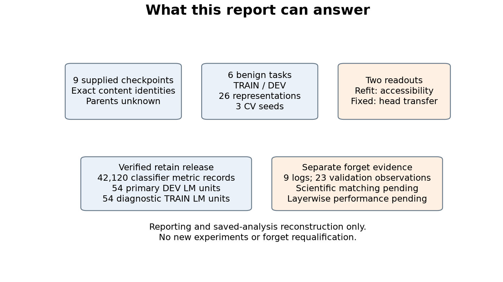
Existing paired95% pointwise exploratory conditional intervals; target refit minus unchanged-base AUROC. All324 records; three intervals include zero. No causal or intervention-replication claim.
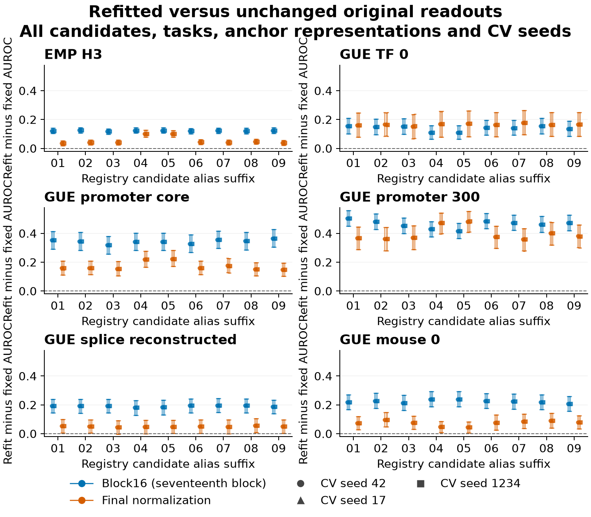
Existing paired95% pointwise conditional intervals. Original pretrained base is not a verified immediate parent. H3/splice selected by question and multiclass coverage, not effect sign; full atlas keeps every task/layer/seed/metric.
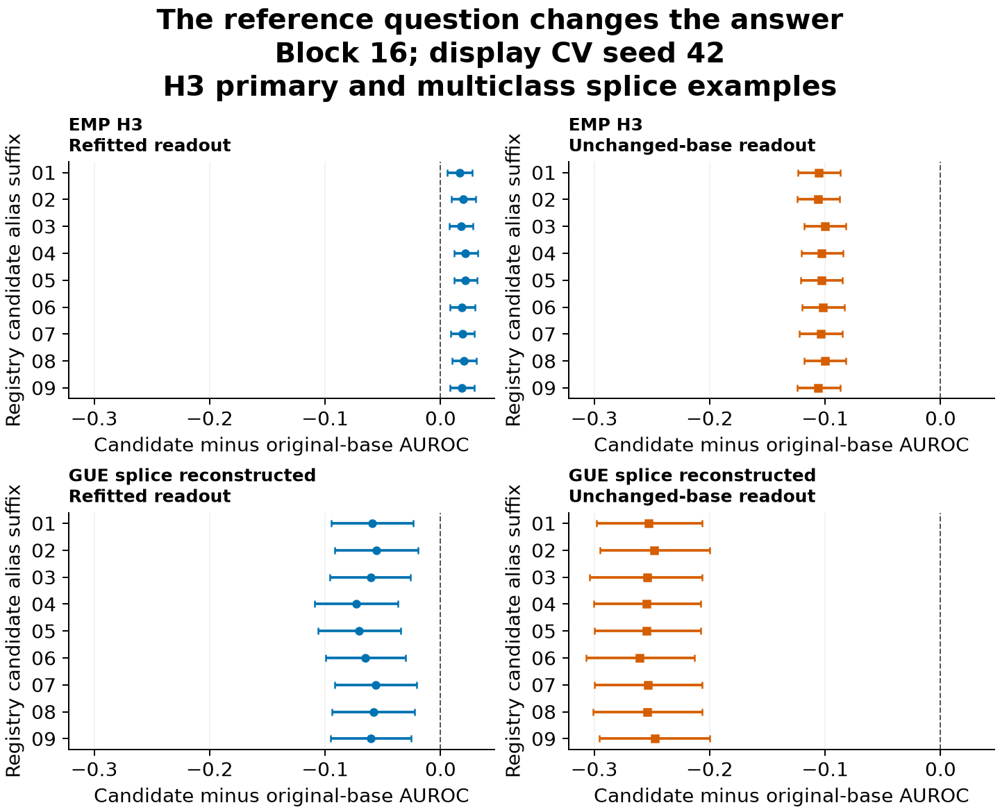
Actual output-head LM NLL. Lower is better sequence prediction under each task protocol; different cohorts are not averaged. No layer/CV-seed expansion, paired LM-base inference or intervention dose-response line. TRAIN54units remain diagnostic.
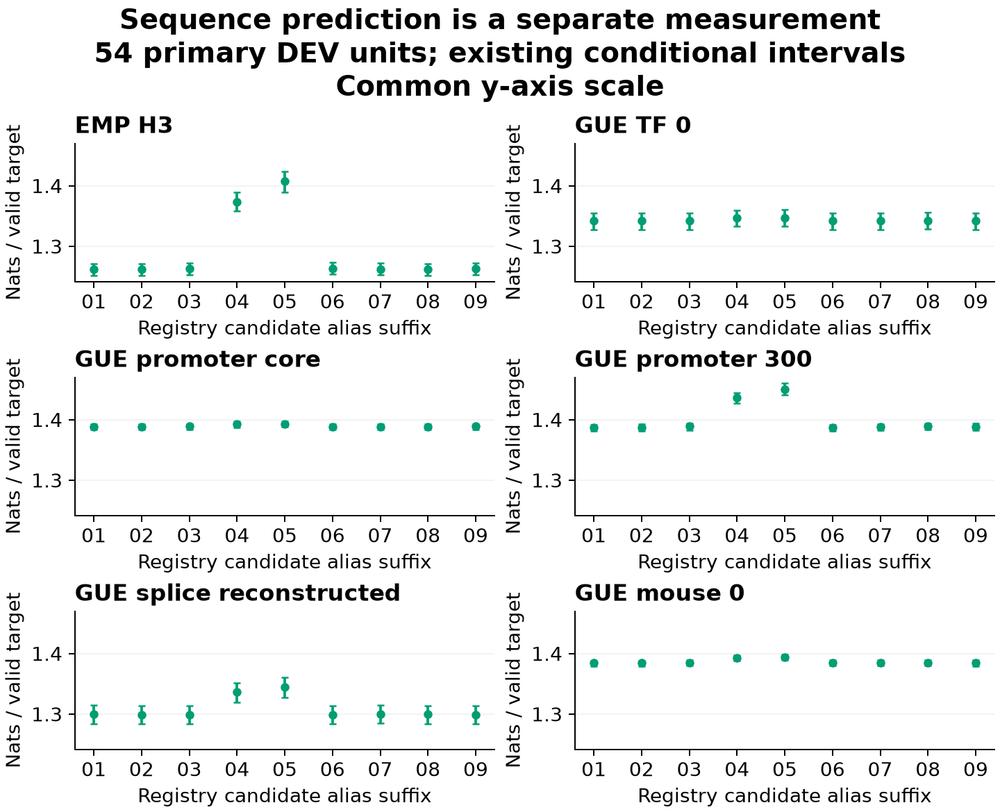
Exact verified S10 unsmoothed traces and all validation calls, including two reinit5 step1500 values. Source-log evidence; scientifically unqualified. Not a retain/forget frontier.
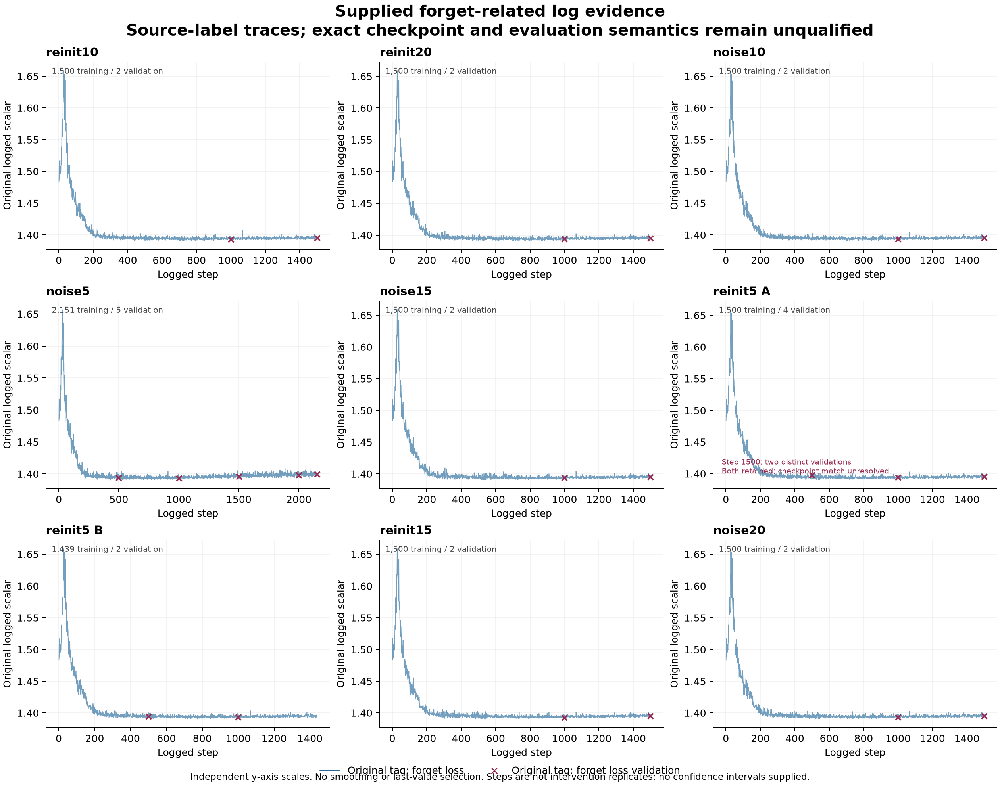
Original source 1cNq3E-78dXxUnJ39kcJYmsdhpBBUWpR6; no smoothing or duplicate selection. Both training and validation labels are source labels, not independently qualified scientific metrics. Validation detail has a separate disclosed scale.
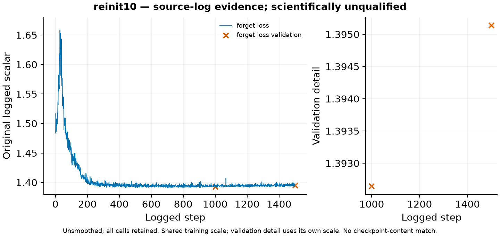
Original source 1P-qfqEx_ay4KD_vTTA1jnzOqSbrOFsUN; no smoothing or duplicate selection. Both training and validation labels are source labels, not independently qualified scientific metrics. Validation detail has a separate disclosed scale.
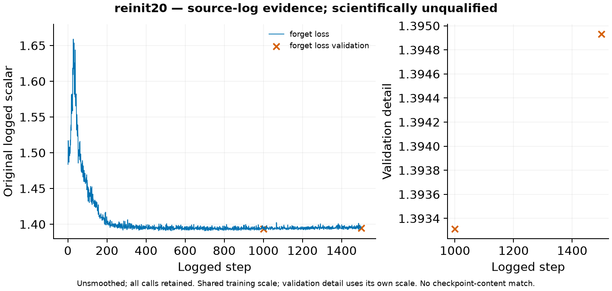
Original source 1vbF21RW1ejCQ9cfIZ2OhQlw4cyYO2y89; no smoothing or duplicate selection. Both training and validation labels are source labels, not independently qualified scientific metrics. Validation detail has a separate disclosed scale.
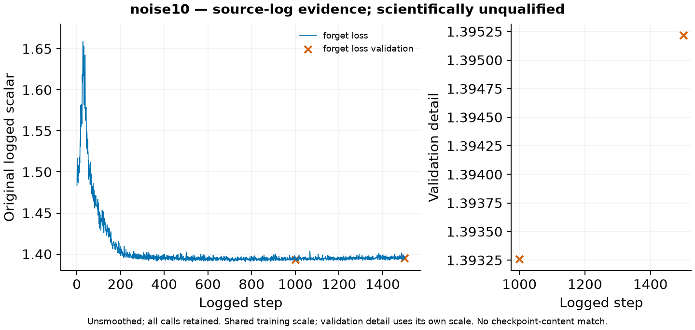
Original source 1NaDNI_wOe8y_p3pOP4vkFlsvTD2tBj-I; no smoothing or duplicate selection. Both training and validation labels are source labels, not independently qualified scientific metrics. Validation detail has a separate disclosed scale.
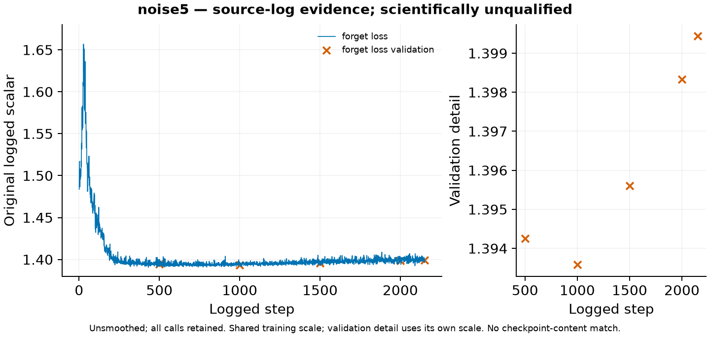
Original source 1s168EN9lcw38b3XBejPccLTtuEDRPMMe; no smoothing or duplicate selection. Both training and validation labels are source labels, not independently qualified scientific metrics. Validation detail has a separate disclosed scale.
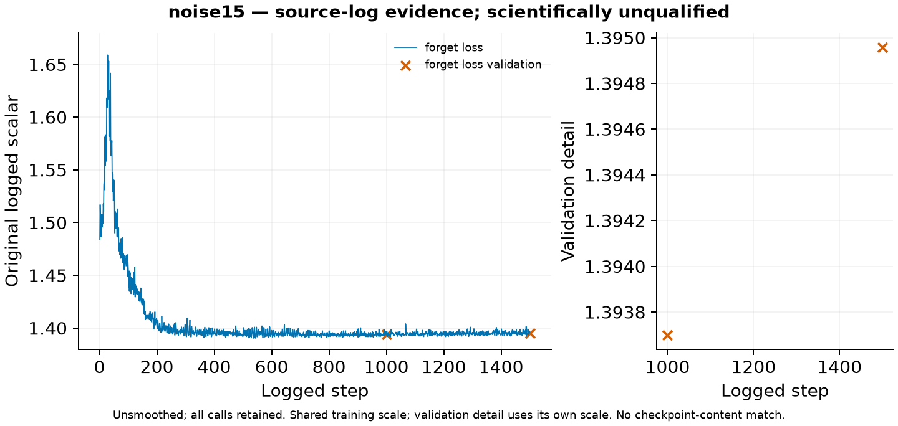
Original source 16ABtYkg71z8I2gyZvl48RSaRqYJ1mNXu; no smoothing or duplicate selection. Both training and validation labels are source labels, not independently qualified scientific metrics. Validation detail has a separate disclosed scale.
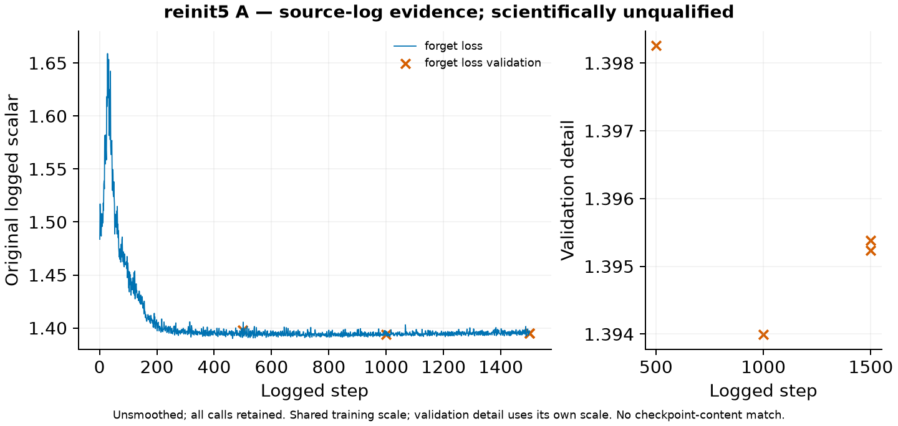
Original source 1Pu1spPUFdXd80fLxlf4_--g75kYGC4me; no smoothing or duplicate selection. Both training and validation labels are source labels, not independently qualified scientific metrics. Validation detail has a separate disclosed scale.
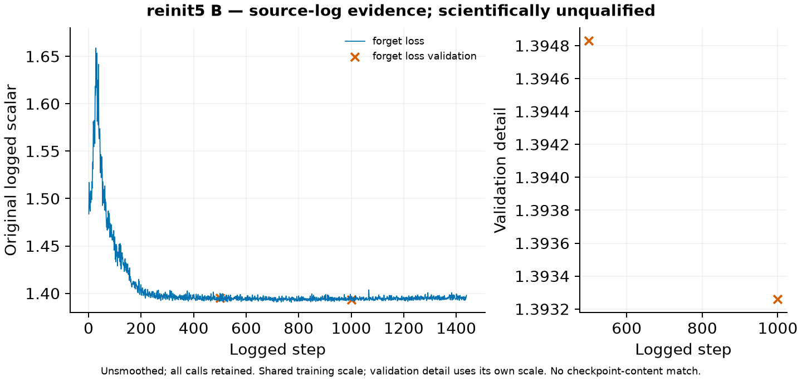
Original source 1ABPNv3jEa89T6GLA26hQcoo9zOwvbeoR; no smoothing or duplicate selection. Both training and validation labels are source labels, not independently qualified scientific metrics. Validation detail has a separate disclosed scale.
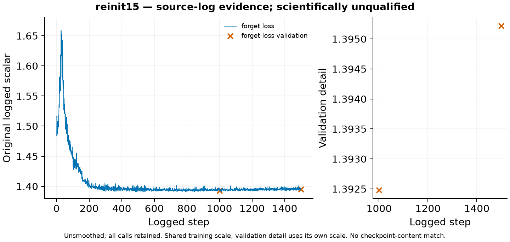
Original source 1x_Q11ZlLWRBXpBFWL2rgLPaLfeFfK8YE; no smoothing or duplicate selection. Both training and validation labels are source labels, not independently qualified scientific metrics. Validation detail has a separate disclosed scale.
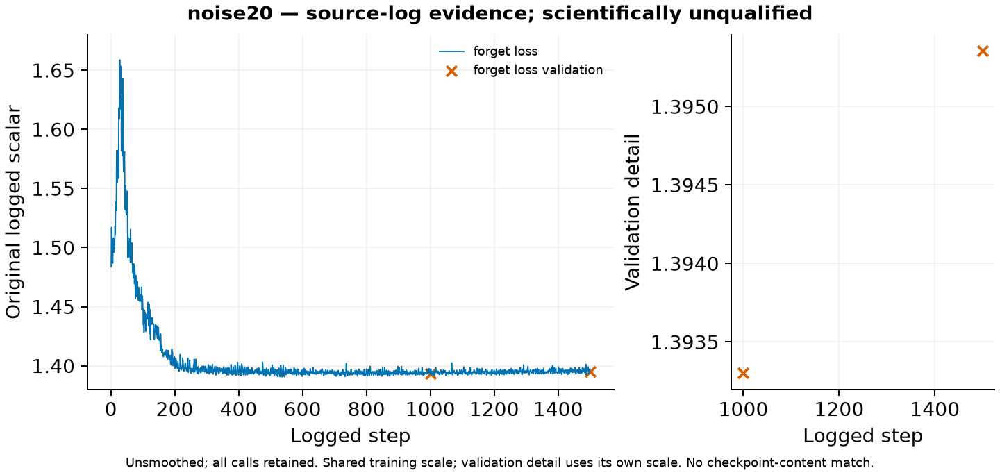
forests-emp_H3-AUROC PNG PDF SVG
forests-emp_H3-accuracy PNG PDF SVG
forests-emp_H3-balanced_accuracy PNG PDF SVG
forests-emp_H3-cross_entropy PNG PDF SVG
forests-gue_mouse_0-AP PNG PDF SVG
forests-gue_mouse_0-AUROC PNG PDF SVG
forests-gue_mouse_0-accuracy PNG PDF SVG
forests-gue_mouse_0-balanced_accuracy PNG PDF SVG
forests-gue_mouse_0-cross_entropy PNG PDF SVG
forests-gue_prom_300_all-AP PNG PDF SVG
forests-gue_prom_300_all-AUROC PNG PDF SVG
forests-gue_prom_300_all-accuracy PNG PDF SVG
forests-gue_prom_300_all-balanced_accuracy PNG PDF SVG
forests-gue_prom_300_all-cross_entropy PNG PDF SVG
forests-gue_prom_core_all-AP PNG PDF SVG
forests-gue_prom_core_all-AUROC PNG PDF SVG
forests-gue_prom_core_all-accuracy PNG PDF SVG
forests-gue_prom_core_all-balanced_accuracy PNG PDF SVG
forests-gue_prom_core_all-cross_entropy PNG PDF SVG
forests-gue_splice_reconstructed-AP PNG PDF SVG
forests-gue_splice_reconstructed-AUROC PNG PDF SVG
forests-gue_splice_reconstructed-accuracy PNG PDF SVG
forests-gue_splice_reconstructed-balanced_accuracy PNG PDF SVG
forests-gue_splice_reconstructed-cross_entropy PNG PDF SVG
forests-gue_tf_0-AP PNG PDF SVG
forests-gue_tf_0-AUROC PNG PDF SVG
forests-gue_tf_0-accuracy PNG PDF SVG
forests-gue_tf_0-balanced_accuracy PNG PDF SVG
forests-gue_tf_0-cross_entropy PNG PDF SVG
gaps-gue_prom_300_all PNG PDF SVG
gaps-gue_prom_core_all PNG PDF SVG
gaps-gue_splice_reconstructed PNG PDF SVG
heatmaps-emp_H3-AP PNG PDF SVG
heatmaps-emp_H3-AUROC PNG PDF SVG
heatmaps-emp_H3-accuracy PNG PDF SVG
heatmaps-emp_H3-balanced_accuracy PNG PDF SVG
heatmaps-emp_H3-cross_entropy PNG PDF SVG
heatmaps-gue_mouse_0-AP PNG PDF SVG
heatmaps-gue_mouse_0-AUROC PNG PDF SVG
heatmaps-gue_mouse_0-accuracy PNG PDF SVG
heatmaps-gue_mouse_0-balanced_accuracy PNG PDF SVG
heatmaps-gue_mouse_0-cross_entropy PNG PDF SVG
heatmaps-gue_prom_300_all-AP PNG PDF SVG
heatmaps-gue_prom_300_all-AUROC PNG PDF SVG
heatmaps-gue_prom_300_all-accuracy PNG PDF SVG
heatmaps-gue_prom_300_all-balanced_accuracy PNG PDF SVG
heatmaps-gue_prom_300_all-cross_entropy PNG PDF SVG
heatmaps-gue_prom_core_all-AP PNG PDF SVG
heatmaps-gue_prom_core_all-AUROC PNG PDF SVG
heatmaps-gue_prom_core_all-accuracy PNG PDF SVG
heatmaps-gue_prom_core_all-balanced_accuracy PNG PDF SVG
heatmaps-gue_prom_core_all-cross_entropy PNG PDF SVG
heatmaps-gue_splice_reconstructed-AP PNG PDF SVG
heatmaps-gue_splice_reconstructed-AUROC PNG PDF SVG
heatmaps-gue_splice_reconstructed-accuracy PNG PDF SVG
heatmaps-gue_splice_reconstructed-balanced_accuracy PNG PDF SVG
heatmaps-gue_splice_reconstructed-cross_entropy PNG PDF SVG
heatmaps-gue_tf_0-AP PNG PDF SVG
heatmaps-gue_tf_0-AUROC PNG PDF SVG
heatmaps-gue_tf_0-accuracy PNG PDF SVG
heatmaps-gue_tf_0-balanced_accuracy PNG PDF SVG
heatmaps-gue_tf_0-cross_entropy PNG PDF SVG
metrics-gue_mouse_0 PNG PDF SVG
metrics-gue_prom_300_all PNG PDF SVG
metrics-gue_prom_core_all PNG PDF SVG
metrics-gue_splice_reconstructed PNG PDF SVG
profiles-emp_H3-AP PNG PDF SVG
profiles-emp_H3-AUROC PNG PDF SVG
profiles-emp_H3-accuracy PNG PDF SVG
profiles-emp_H3-balanced_accuracy PNG PDF SVG
profiles-emp_H3-cross_entropy PNG PDF SVG
profiles-gue_mouse_0-AP PNG PDF SVG
profiles-gue_mouse_0-AUROC PNG PDF SVG
profiles-gue_mouse_0-accuracy PNG PDF SVG
profiles-gue_mouse_0-balanced_accuracy PNG PDF SVG
profiles-gue_mouse_0-cross_entropy PNG PDF SVG
profiles-gue_prom_300_all-AP PNG PDF SVG
profiles-gue_prom_300_all-AUROC PNG PDF SVG
profiles-gue_prom_300_all-accuracy PNG PDF SVG
profiles-gue_prom_300_all-balanced_accuracy PNG PDF SVG
profiles-gue_prom_300_all-cross_entropy PNG PDF SVG
profiles-gue_prom_core_all-AP PNG PDF SVG
profiles-gue_prom_core_all-AUROC PNG PDF SVG
profiles-gue_prom_core_all-accuracy PNG PDF SVG
profiles-gue_prom_core_all-balanced_accuracy PNG PDF SVG
profiles-gue_prom_core_all-cross_entropy PNG PDF SVG
profiles-gue_splice_reconstructed-AP PNG PDF SVG
profiles-gue_splice_reconstructed-AUROC PNG PDF SVG
profiles-gue_splice_reconstructed-accuracy PNG PDF SVG
profiles-gue_splice_reconstructed-balanced_accuracy PNG PDF SVG
profiles-gue_splice_reconstructed-cross_entropy PNG PDF SVG
profiles-gue_tf_0-AP PNG PDF SVG
profiles-gue_tf_0-AUROC PNG PDF SVG
profiles-gue_tf_0-accuracy PNG PDF SVG
profiles-gue_tf_0-balanced_accuracy PNG PDF SVG
profiles-gue_tf_0-cross_entropy PNG PDF SVG
seeds-gue_prom_300_all PNG PDF SVG
seeds-gue_prom_core_all PNG PDF SVG